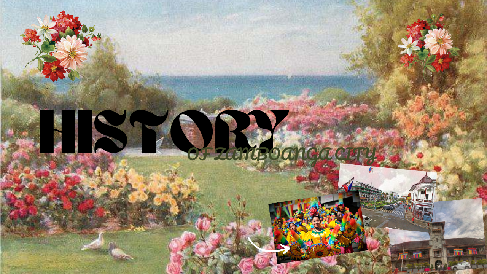

History
Before the arrival of the Spaniards, Zamboanga City was a trading post for Chinese-Malays, Tausugs, Subanons, Samals, and Badjaos. The word "Zamboanga" originated from the Malay settlers who called it "Jambangan," meaning "land of flowers." The Spanish founded the city in 1635 and built a fort to defend against native attacks. The United States government built the City Hall in 1905. Today, it still serves as City Hall of Zamboanga City.
Known as the "City of Flowers" (the etymology of Zamboanga comes from the Malay word jambangan means garden of flowers), it is now one of the most important and busiest port cities in the Philippines. Hermosa Festival as an example, it emphasizes the City of Zamboanga and is also an annual celebration in honor of the patroness of the City of Zamboanga—Our Lady of the Pillar.
